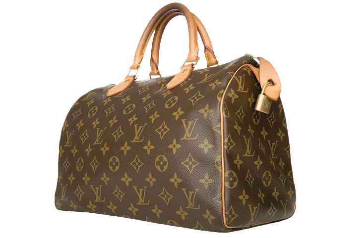
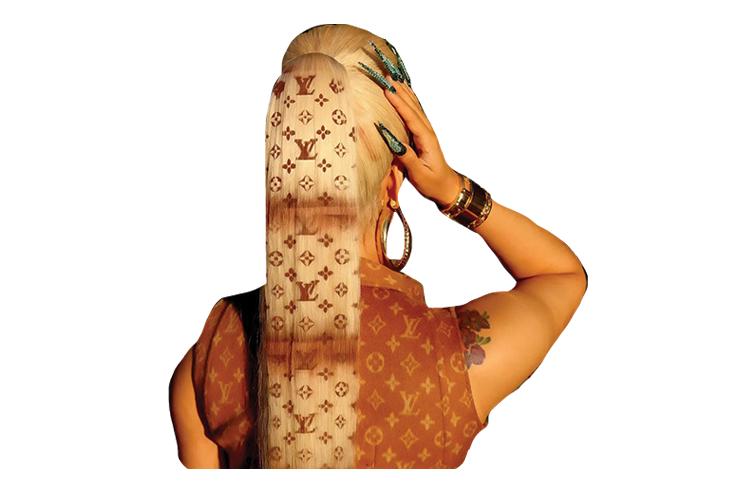
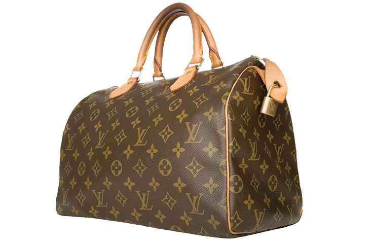
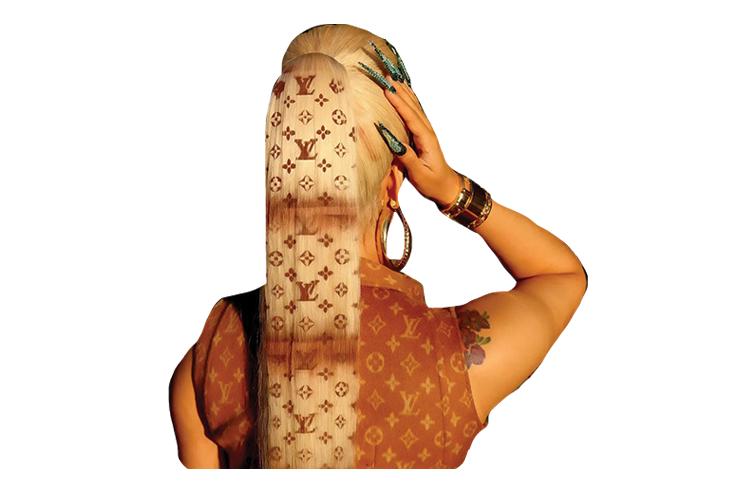

DAPPER
DAN
The idea of logos as a fashion statement, or symbol of elite status moved onward into the 1980’s and 1990’s through hip hop and streetwear fashion. Dapper Dan is best known for his bootlegged, logo-covered textiles that is now often referred to as the “logomania” trend. “Logomania” is best described as the trend of logos being extremely flashy, apparent, and placed on the outside of clothing, usually in repeated monogram patterns, or printed oversized across clothing. Rather than having the designer logo on a small tag on the interior of the clothing, logomania did the opposite. It was the ultimate status symbol because it used as many logos as possible. Unlike the small, but ever so important red tab on Levi’s jeans, Dapper Dan’s use of logos is loud and unmistakable.
Dapper Dan, or Daniel Day, originally planned to work as a wholesaler, but faced prejudice and racism due to him being a Black man in Harlem. Rather than outsourcing certain textiles, Day invented a new means of screen printing on leather. He began to copy logos of many high-end design houses, namely Louis Vuitton, and Gucci, who both still reign in the logo and design world today. He created maximalist clothing designs with his logo-covered textiles and eventually opened up Dapper Dan’s Boutique in 1982. Day’s knockoff textiles and logos were essentially copies of luxury brands, but they were designed with intentions to assert the Black and hip-hop community into the world of luxury. At the time, luxury brands such as Louis Vuitton and Gucci were highly exclusive and they designed for very specific audiences that were predominantly white and wealthy.
Dapper Dan recalls how “customers flocked to the store knowing full well that Louis Vuitton didn't make clothes, and Gucci didn't make jackets with logos all over them. I was doing something else. I was doing Dapper Dan’s. I deconstructed the brand down to the essence of their power, which was the logo crest, and reconstructed that power in a new context. The names and the crests signified wealth, respect, and prestige. My customers wanted to buy into that power, and that was what I was offering”. At Dapper Dan’s boutique, the bootleg designs were not meant to trick his customers into thinking the clothing was authentic, but rather it allowed Black creatives to take a piece of status and power that logos hold, and to assert themselves in the luxury world.


 


